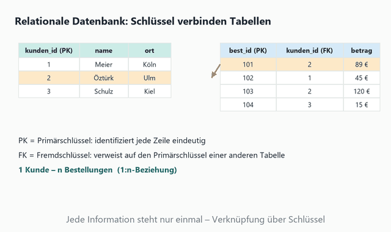
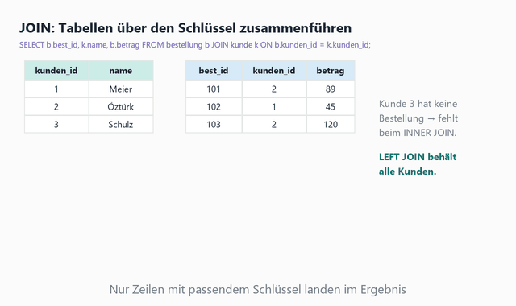
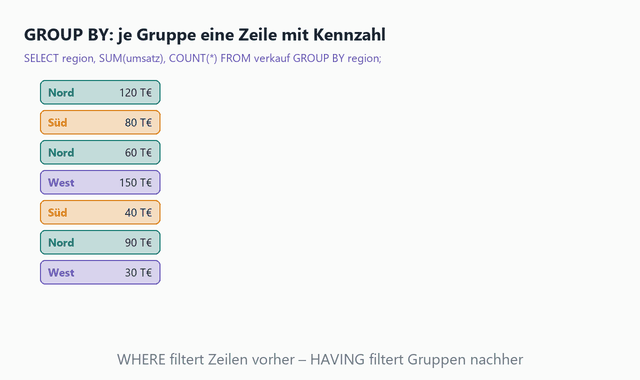
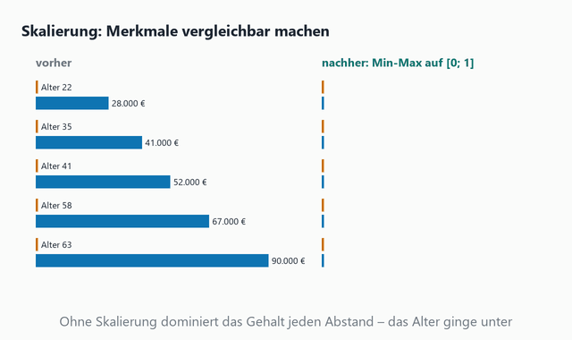
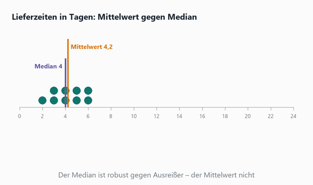
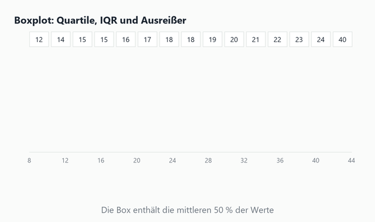
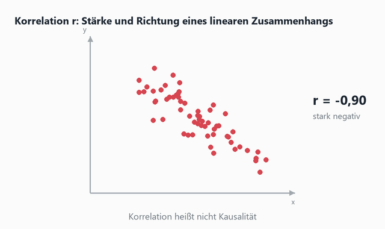
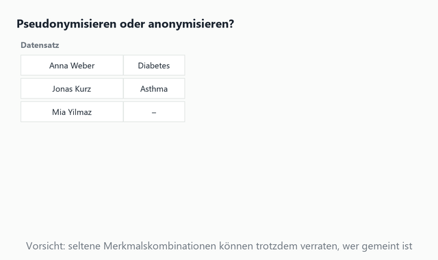

Umgang mit Daten: speichern, abfragen, säubern, beschreiben, schützen
Ein Modell ist nur so gut wie seine Daten. In echten KI-Projekten steckt oft der größte Teil der Arbeit in der Datenaufbereitung. In diesem Modul lernen Sie, wie Daten in relationalen Datenbanken liegen und wie Sie sie mit SQL abfragen, wie Sie ihre Qualität prüfen und sie für ein Modell vorbereiten, wie Sie Daten mit Kennzahlen und Diagrammen beschreiben – und welche Sicherheits- und Datenschutzregeln schon bei der Erhebung gelten.
Datenarten und Skalenniveaus
Mit Hausnummern rechnet niemand: Nummer 8 ist nicht „doppelt so viel“ wie Nummer 4. Mit Preisen schon: 8 € sind doppelt so viel wie 4 €. Zahlen sind also nicht gleich Zahlen – es kommt darauf an, was sie bedeuten.
Das Skalenniveau eines Merkmals legt fest, welche Rechenoperationen sinnvoll sind – und welche Kennzahlen, Diagramme und Vorverarbeitungsschritte passen.
| Skala | Eigenschaft | Beispiele | Sinnvolle Lagemaße |
|---|---|---|---|
| Nominal | nur Kategorien, keine Reihenfolge | Farbe, Abteilung, Postleitzahl | Modus |
| Ordinal | Reihenfolge, Abstände unklar | Schulnote, Zufriedenheit „gering/mittel/hoch“ | Modus, Median |
| Intervall | gleiche Abstände, kein natürlicher Nullpunkt | Temperatur in °C, Kalenderjahr | + Mittelwert |
| Verhältnis | gleiche Abstände und echter Nullpunkt | Umsatz, Gewicht, Dauer, Alter | + Mittelwert, Verhältnisse („doppelt so viel“) |
Nominal und ordinal heißen zusammen kategorial (qualitativ), Intervall und Verhältnis metrisch (quantitativ). Metrische Merkmale sind diskret (zählbar: Anzahl Bestellungen) oder stetig (jeder Zwischenwert möglich: Gewicht).
Erst das Skalenniveau bestimmen, dann rechnen: Mit Postleitzahlen bildet man keinen Mittelwert.
Postleitzahl, Kundennummer und Artikelnummer sehen aus wie Zahlen, sind aber nominal. Für ein Modell müssen sie als Kategorien behandelt (oder weggelassen) werden.
Kurz geprüft: Welches Skalenniveau hat eine Kundenzufriedenheit von 1 („sehr unzufrieden“) bis 5 („sehr zufrieden“)?
Relationale Datenbanken: Tabelle, Schlüssel, Beziehung
Im Adressbuch steht jede Person einmal. Auf der Rechnung steht nur die Kundennummer – wer die Adresse braucht, schlägt im Adressbuch nach. Ändert sich die Adresse, ändert man sie an genau einer Stelle.
Eine relationale Datenbank speichert Daten in Tabellen (Relationen). Jede Zeile ist ein Datensatz, jede Spalte ein Attribut. Ein Primärschlüssel (PK) identifiziert jede Zeile eindeutig. Ein Fremdschlüssel (FK) verweist auf den Primärschlüssel einer anderen Tabelle und stellt so Beziehungen her.

| Beziehung | Bedeutung | Umsetzung |
|---|---|---|
| 1:1 | ein Datensatz gehört zu genau einem anderen | Mitarbeiter – Dienstwagen (wenn jeder höchstens einen hat) |
| 1:n | einer hat viele | Kunde – Bestellungen: FK in der „n“-Tabelle |
| n:m | viele haben viele | Bestellungen – Artikel: eigene Zwischentabelle (Bestellposition) mit zwei Fremdschlüsseln |
Datenbanken arbeiten mit Transaktionen, die die ACID-Eigenschaften erfüllen: atomar (ganz oder gar nicht), konsistent, isoliert, dauerhaft. Für KI-Projekte werden Daten oft aus mehreren Systemen in ein Data Warehouse (strukturiert, für Auswertungen) oder einen Data Lake (Rohdaten aller Art) geladen – der Vorgang heißt ETL (Extract, Transform, Load).
Primärschlüssel = eindeutige Kennung einer Zeile. Fremdschlüssel = Verweis auf eine Zeile in einer anderen Tabelle.
„Wie bilden Sie eine n:m-Beziehung ab?“ – Antwort: mit einer Zwischentabelle, die die Primärschlüssel beider Tabellen als Fremdschlüssel enthält (zusammen oft als zusammengesetzter Primärschlüssel).
Normalisierung: jede Information nur einmal
Eine Excel-Liste, in der bei jeder Bestellung Name, Adresse und Telefonnummer des Kunden neu eingetippt werden: Irgendwann stehen dort drei verschiedene Schreibweisen derselben Straße. Welche stimmt?
Normalisierung zerlegt Tabellen so, dass Daten nicht doppelt gespeichert werden (Redundanz). Sie verhindert Anomalien beim Einfügen, Ändern und Löschen.
| Normalform | Regel | Verstoß (Beispiel) |
|---|---|---|
| 1. NF | Jedes Feld enthält genau einen (atomaren) Wert | Spalte „Artikel“ mit „Stuhl, Tisch, Lampe“ |
| 2. NF | 1. NF + jedes Nicht-Schlüssel-Attribut hängt vom ganzen Primärschlüssel ab | In Bestellposition (bestell_nr, artikel_nr) steht der Artikelname – er hängt nur von artikel_nr ab |
| 3. NF | 2. NF + kein Nicht-Schlüssel-Attribut hängt von einem anderen Nicht-Schlüssel-Attribut ab (keine transitiven Abhängigkeiten) | In Kunde stehen PLZ und Ort – der Ort hängt von der PLZ ab |
| Anomalie | Was passiert |
|---|---|
| Einfügeanomalie | Ein neuer Artikel kann nicht angelegt werden, solange ihn niemand bestellt hat |
| Änderungsanomalie | Eine Adresse muss in vielen Zeilen geändert werden; vergisst man eine, ist der Bestand widersprüchlich |
| Löschanomalie | Löscht man die letzte Bestellung eines Kunden, sind auch seine Kontaktdaten weg |
Normalisieren für die Speicherung, zusammenführen (JOIN) für die Auswertung.
Für ML-Modelle braucht man meist eine breite Tabelle mit einer Zeile je Beispiel. Die entsteht durch JOINs aus den normalisierten Tabellen – in der Praxis oft „Feature-Tabelle“ genannt.
SQL I: SELECT, WHERE, ORDER BY
„Zeig mir alle Bestellungen aus Köln über 100 €, die teuerste zuerst.“ Genau so einen Satz schreibt man in SQL – nur in einer festen Grammatik.
SQL (Structured Query Language) ist die Standardsprache für relationale Datenbanken. Man beschreibt, was man haben will, nicht wie die Datenbank es findet (deklarativ).
SELECT best_id, kunden_id, betrag -- welche Spalten FROM bestellung -- aus welcher Tabelle WHERE betrag > 100 -- welche Zeilen AND datum >= '2026-01-01' ORDER BY betrag DESC -- Sortierung: absteigend LIMIT 10; -- nur die ersten 10
| Baustein | Bedeutung | Beispiel |
|---|---|---|
=, <>, <, >= | Vergleich | ort = 'Köln' |
AND, OR, NOT | Bedingungen verknüpfen | betrag > 100 AND ort = 'Köln' |
IN (…) | in einer Liste | ort IN ('Köln', 'Bonn') |
BETWEEN … AND … | Bereich (Grenzen eingeschlossen) | betrag BETWEEN 50 AND 100 |
LIKE | Textmuster, % = beliebig viele Zeichen | name LIKE 'Sch%' |
IS NULL | Wert fehlt | email IS NULL |
DISTINCT | Doppelte Zeilen entfernen | SELECT DISTINCT ort FROM kunde |
SELECT = Spalten, FROM = Tabelle, WHERE = Zeilen, ORDER BY = Reihenfolge.
Fehlende Werte prüft man mit IS NULL, nicht mit = NULL. Ein Vergleich mit NULL ergibt nie „wahr“ – die Abfrage liefert dann stillschweigend keine Zeilen.
SQL II: JOIN, GROUP BY, HAVING

| JOIN-Art | Ergebnis |
|---|---|
| INNER JOIN | nur Zeilen, die in beiden Tabellen einen Partner haben |
| LEFT JOIN | alle Zeilen der linken Tabelle; fehlt rechts ein Partner, stehen dort NULL-Werte |
| RIGHT JOIN | alle Zeilen der rechten Tabelle |
| FULL OUTER JOIN | alle Zeilen beider Tabellen |

SELECT k.ort, COUNT(*) AS anzahl, AVG(b.betrag) AS schnitt FROM bestellung b JOIN kunde k ON b.kunden_id = k.kunden_id WHERE b.datum >= '2026-01-01' -- Zeilen vorher filtern GROUP BY k.ort HAVING COUNT(*) > 50 -- Gruppen nachher filtern ORDER BY schnitt DESC;
Aggregatfunktionen: COUNT, SUM, AVG, MIN, MAX. Logische Auswertungsreihenfolge: FROM/JOIN → WHERE → GROUP BY → HAVING → SELECT → ORDER BY → LIMIT. Deshalb darf in WHERE keine Aggregatfunktion stehen – die Gruppen gibt es dort noch nicht.
WHERE filtert Zeilen vor dem Gruppieren, HAVING filtert Gruppen danach.
Jede Spalte im SELECT muss entweder im GROUP BY stehen oder in einer Aggregatfunktion. SELECT ort, name, COUNT(*) … GROUP BY ort ist fehlerhaft – welcher Name soll für die ganze Gruppe gelten?
Kurz geprüft: Sie wollen alle Kunden auflisten, auch solche ohne Bestellung, mit ihrer Bestellanzahl. Welcher JOIN?
Datenqualität: Garbage in, garbage out
Ein Navi mit veralteter Karte schickt Sie in eine Straße, die es nicht mehr gibt. Das Navi rechnet perfekt – aber auf falscher Grundlage. Genauso übernimmt ein Modell jeden Fehler seiner Daten.
Datenqualität beschreibt, wie gut Daten für ihren Zweck geeignet sind („fitness for use“). Sie wird an mehreren Dimensionen gemessen und sollte vor jedem Training geprüft und dokumentiert werden.
| Dimension | Frage | Beispiel für ein Problem | Messgröße |
|---|---|---|---|
| Vollständigkeit | Fehlt etwas? | 20 % der Kunden ohne Geburtsjahr | Anteil fehlender Werte je Spalte |
| Korrektheit | Stimmt es mit der Realität überein? | Alter 210 Jahre, negative Mengen | Anteil verletzter Plausibilitätsregeln |
| Konsistenz | Widerspricht es sich? | Lieferdatum vor Bestelldatum; „Köln“ und „KÖLN“ | Anzahl Regelverstöße zwischen Feldern/Systemen |
| Aktualität | Ist es noch gültig? | Adressen von vor fünf Jahren | Alter der Daten, Zeit seit letzter Aktualisierung |
| Eindeutigkeit | Gibt es Doppelte? | derselbe Kunde dreimal angelegt | Anteil Duplikate |
| Repräsentativität | Bildet es alle relevanten Fälle ab? | Nur Daten aus dem Sommer, nur aus einem Werk | Vergleich der Verteilungen mit der Zielpopulation |
Ein Modell kann nicht besser sein als seine Daten – Datenqualität wird geprüft, gemessen und dokumentiert, bevor trainiert wird.
Die EU-KI-Verordnung verlangt für Hochrisiko-KI ausdrücklich Daten-Governance: Trainings-, Validierungs- und Testdaten müssen relevant, hinreichend repräsentativ und so weit wie möglich fehlerfrei und vollständig sein (Art. 10). Diese Brücke zwischen Technik und Recht bringt in Teil 2 Punkte.
Vorverarbeitung: fehlende Werte, Ausreißer, Duplikate
Bevor gekocht wird, wird geputzt, geschält und geschnitten. Niemand wirft eine ungewaschene Kartoffel samt Erde in den Topf. Vorverarbeitung ist das Gemüseputzen der Daten.
Vorverarbeitung (Preprocessing) umfasst alle Schritte zwischen Rohdaten und Modell: Bereinigen, Ergänzen, Umwandeln, Auswählen. Jede Entscheidung wird dokumentiert, damit sie im Betrieb identisch angewendet wird.
Fehlende Werte
| Vorgehen | Wann sinnvoll | Risiko |
|---|---|---|
| Zeilen löschen | wenige Lücken, zufällig verteilt | Datenverlust, Verzerrung, wenn Lücken nicht zufällig sind |
| Spalte löschen | Spalte überwiegend leer und unwichtig | wertvolle Information geht verloren |
| Mit Median/Mittelwert/Modus füllen (Imputation) | numerisch: Median (robust); kategorial: häufigster Wert | Streuung wird kleiner |
| Indikatorspalte „Wert fehlte“ ergänzen | wenn das Fehlen selbst etwas bedeutet | mehr Spalten |
| Modellbasiert schätzen | starke Zusammenhänge zu anderen Merkmalen | aufwendig, Scheingenauigkeit |
Ausreißer
Erst fragen: Fehler oder echter Extremwert? Ein Alter von 210 ist ein Fehler (korrigieren oder entfernen). Eine Großbestellung über 80.000 € kann echt sein – und für das Geschäft besonders wichtig. Erkennen lassen sich Ausreißer mit dem Boxplot (IQR-Regel, Lektion 11) oder z-Werten (mehr als 3 Standardabweichungen vom Mittelwert). Umgang: korrigieren, entfernen, kappen (Winsorisieren) oder robuste Verfahren nutzen.
Duplikate
Exakte Duplikate löscht man; unscharfe („Meier GmbH“ / „Meyer GmbH, Köln“) brauchen Abgleichsregeln (Record Linkage).
import pandas as pd df = pd.read_csv("kunden.csv") df.isna().sum() # fehlende Werte je Spalte df = df.drop_duplicates() # exakte Duplikate entfernen df["alter"] = df["alter"].where(df["alter"].between(16, 110)) # Unmögliches → fehlend df["alter_fehlte"] = df["alter"].isna() df["alter"] = df["alter"].fillna(df["alter"].median())
In echten Projekten wird der Median nur aus den Trainingsdaten berechnet – siehe Lektion 9.
Fehlende Werte und Ausreißer nie automatisch löschen – erst verstehen, warum sie da sind.
Merkmale umwandeln: Skalierung, Kodierung, Feature Engineering
Wer Äpfel mit Birnen vergleicht, muss sich auf eine Einheit einigen – Gewicht, Preis, Stück. Ohne gemeinsame Einheit sind Vergleiche Unsinn.
Viele Verfahren rechnen mit Abständen oder Gradienten. Liegen Merkmale auf sehr unterschiedlichen Skalen, dominiert das Merkmal mit den größten Zahlen. Skalierung bringt sie auf vergleichbare Bereiche; Kodierung übersetzt Kategorien in Zahlen.

Beispiel: Alter 41, Minimum 22, Maximum 63 → (41 − 22) / (63 − 22) = 19 / 41 ≈ 0,46.
Kategorien kodieren
- One-Hot-Kodierung für nominale Merkmale: aus „Tarif = Basis/Plus/Premium“ werden drei Spalten mit 0/1. Mit
drop="first"reichen zwei. - Ordinale Kodierung für geordnete Kategorien: gering = 1, mittel = 2, hoch = 3.
- Bei sehr vielen Kategorien (z. B. 8.000 Postleitzahlen): zusammenfassen (Region) oder Häufigkeits- bzw. Zielwertkodierung.
Feature Engineering
Aus vorhandenen Daten neue, aussagekräftige Merkmale bauen: Wochentag aus dem Datum, Tage seit letztem Kauf, Umsatz der letzten 90 Tage, Verhältnis Retouren zu Bestellungen. Gutes Fachwissen schlägt hier oft komplizierte Modelle.
Abstandsbasierte Verfahren (kNN, k-Means, neuronale Netze) brauchen skalierte Merkmale; Entscheidungsbäume nicht.
Nominale Kategorien einfach durchnummerieren (Köln = 1, Bonn = 2, Ulm = 3) täuscht eine Reihenfolge und Abstände vor, die es nicht gibt. Für lineare Modelle und Netze: One-Hot.
Data Leakage – die häufigste Prüfungsfalle
Ein Schüler bekommt vor der Klassenarbeit versehentlich das Lösungsblatt zu sehen. Seine Note ist hervorragend – über sein Können sagt sie nichts.
Data Leakage heißt: Informationen, die im echten Einsatz zum Vorhersagezeitpunkt nicht verfügbar wären, gelangen ins Training. Das Modell wirkt im Test hervorragend und enttäuscht im Betrieb.
| Art | Beispiel | Gegenmittel |
|---|---|---|
| Ziel-Leck (target leakage) | Kündigerprognose nutzt die Spalte „Kündigungsgrund“ – die gibt es erst nach der Kündigung | Für jedes Merkmal fragen: Kenne ich es zum Vorhersagezeitpunkt? |
| Vorverarbeitungs-Leck | Skalierung, Imputation oder Merkmalsauswahl auf allen Daten vor dem Split | Erst aufteilen, dann nur auf Trainingsdaten anpassen (Pipeline) |
| Zeit-Leck | Zufälliger Split bei Zeitreihen | Zeitlich trennen |
| Gruppen-Leck | Fotos desselben Patienten in Training und Test | Gruppenweise aufteilen |
from sklearn.model_selection import train_test_split from sklearn.pipeline import make_pipeline from sklearn.impute import SimpleImputer from sklearn.preprocessing import StandardScaler from sklearn.linear_model import LogisticRegression X_train, X_test, y_train, y_test = train_test_split(X, y, test_size=0.2, random_state=42) modell = make_pipeline(SimpleImputer(strategy="median"), StandardScaler(), LogisticRegression()) modell.fit(X_train, y_train) # Median und Skalierung nur aus Trainingsdaten print(modell.score(X_test, y_test)) # Testdaten werden nur transformiert
Zuerst aufteilen, dann vorverarbeiten – und nur Merkmale nutzen, die zum Vorhersagezeitpunkt bekannt sind.
Ein Testergebnis, das „zu gut um wahr zu sein“ ist (z. B. 99,8 % bei einer schwierigen Aufgabe), ist fast immer ein Leck. In Situationsaufgaben wird genau das gern versteckt.
Kurz geprüft: Ein Modell soll bei Auftragseingang vorhersagen, ob ein Auftrag storniert wird. Welches Merkmal ist ein Leck?
Deskriptive Statistik: Lagemaße
Neun Freunde gehen essen, einer davon ist Millionär. Das „durchschnittliche Vermögen“ am Tisch ist riesig – aber niemand außer ihm ist reich. Der Median verrät: Die typische Person am Tisch hat ein ganz normales Vermögen.
Lagemaße beschreiben, wo die Daten „im Zentrum“ liegen. Deskriptive Statistik beschreibt vorhandene Daten; schließende Statistik zieht Schlüsse auf eine Grundgesamtheit.
| Maß | Berechnung | Eigenschaft |
|---|---|---|
| Arithmetisches Mittel x̄ | Summe aller Werte / Anzahl | nutzt alle Werte, ausreißerempfindlich |
| Median | mittlerer Wert der sortierten Reihe; bei gerader Anzahl Mittel der beiden mittleren | robust gegen Ausreißer, ab ordinal |
| Modus | häufigster Wert | auch für nominale Daten |

Rechenbeispiel
Lieferzeiten in Tagen: 2, 3, 3, 4, 4, 5, 5, 6, 22.
- Mittelwert: (2 + 3 + 3 + 4 + 4 + 5 + 5 + 6 + 22) / 9 = 54 / 9 = 6
- Median: 9 Werte, der 5. Wert der sortierten Reihe = 4
- Modus: 3, 4 und 5 kommen je zweimal vor – die Reihe ist mehrgipflig.
Liegt der Mittelwert deutlich über dem Median, ist die Verteilung rechtsschief (wenige sehr große Werte) – typisch für Einkommen, Lieferzeiten und Bestellwerte.
Bei Ausreißern oder schiefen Verteilungen beschreibt der Median den typischen Wert besser als der Mittelwert.
Streuungsmaße: Spannweite, Varianz, Standardabweichung, Quartile
Zwei Busse kommen „im Schnitt“ pünktlich. Der eine immer auf die Minute, der andere mal 20 Minuten zu früh, mal 20 zu spät. Gleicher Mittelwert, völlig andere Zuverlässigkeit – das misst die Streuung.
Streuungsmaße beschreiben, wie weit die Werte auseinanderliegen. Zusammen mit einem Lagemaß ergeben sie ein brauchbares Bild der Verteilung.
Rechenbeispiel Standardabweichung
Werte 4, 6, 8, 10, 12: Mittelwert 8. Abweichungen −4, −2, 0, 2, 4; Quadrate 16, 4, 0, 4, 16; Summe 40.
s² = 40 / (5 − 1) = 10 s = √10 ≈ 3,16
Quartile und Boxplot
Die sortierten Werte werden in vier gleich große Teile geteilt: Q1 (25 %), Median (50 %), Q3 (75 %). Der Interquartilsabstand enthält die mittleren 50 % der Werte. Ausreißerregel nach Tukey: Werte unter Q1 − 1,5 · IQR oder über Q3 + 1,5 · IQR.

Mittelwert und Standardabweichung gehören zusammen, Median und IQR auch – das zweite Paar ist robust gegen Ausreißer.
Quartile werden je nach Lehrbuch und Software leicht unterschiedlich berechnet. Schreiben Sie in der Prüfung Ihren Rechenweg auf – dann gibt es volle Punkte, auch wenn Ihr Q1 um eine halbe Einheit vom Erwartungshorizont abweicht.
Zusammenhänge: Kovarianz, Korrelation – und keine Kausalität
Im Sommer verkaufen Eisdielen mehr Eis, und es gibt mehr Sonnenbrände. Eis verursacht trotzdem keinen Sonnenbrand – beides hängt an der Sonne.
Der Korrelationskoeffizient nach Pearson r misst Stärke und Richtung eines linearen Zusammenhangs zweier metrischer Merkmale, von −1 (perfekt gegenläufig) über 0 (kein linearer Zusammenhang) bis +1 (perfekt gleichläufig).

- Scheinkorrelation: Eine dritte Größe (Störgröße, Confounder) steuert beide Merkmale – wie die Sonne beim Eis.
- Nichtlineare Zusammenhänge (z. B. U-Form) können r ≈ 0 ergeben, obwohl ein starker Zusammenhang besteht – immer auch ein Streudiagramm ansehen.
- Für ordinale Daten oder bei Ausreißern: Rangkorrelation nach Spearman.
- Kausalität belegt man mit Experimenten (z. B. A/B-Tests) oder fachlicher Begründung, nicht mit r allein.
Korrelation zeigt, dass zwei Größen zusammen schwanken – nicht, dass die eine die andere verursacht.
Zwei Merkmale mit r = 0,95 im selben Modell bringen kaum zusätzliche Information und können lineare Modelle instabil machen (Multikollinearität). Oft reicht eines davon.
Visualisierung: das richtige Diagramm für die Frage
Eine Wetterkarte zeigt in einer Sekunde, wo es regnet. Eine Tabelle mit 400 Messstationen bräuchte zehn Minuten. Gute Bilder sparen Zeit – schlechte führen in die Irre.
Die Wahl des Diagramms folgt der Frage: Vergleich, Verlauf, Verteilung, Zusammenhang oder Anteil. Visualisierung dient zwei Zwecken: explorativ (Daten verstehen) und erklärend (Ergebnisse vermitteln).
| Frage | Diagramm | Beispiel |
|---|---|---|
| Kategorien vergleichen | Balken-/Säulendiagramm | Umsatz je Filiale |
| Verlauf über Zeit | Liniendiagramm | Absatz je Woche |
| Verteilung eines Merkmals | Histogramm, Boxplot | Lieferzeiten, Bestellwerte |
| Zusammenhang zweier Merkmale | Streudiagramm | Werbebudget und Umsatz |
| Anteile an einem Ganzen | gestapelte Balken, (sparsam) Kreisdiagramm | Umsatzanteil je Produktgruppe |
| Zusammenhänge vieler Merkmale | Heatmap der Korrelationsmatrix | Merkmalsauswahl vor dem Training |
| Modellgüte | Konfusionsmatrix, ROC-Kurve, Lernkurve | Modul 4 |
Erst die Frage, dann das Diagramm: Vergleich → Balken, Verlauf → Linie, Verteilung → Histogramm/Boxplot, Zusammenhang → Streudiagramm.
Eine abgeschnittene y-Achse (beginnt bei 95 statt 0) lässt bei Balken aus 2 % Unterschied einen Riesenabstand werden. Bei Balkendiagrammen beginnt die Achse bei null.
Dashboards und gute Diagrammgestaltung
Das Armaturenbrett im Auto zeigt wenige Werte: Tempo, Tank, Warnleuchten. Würde es alle 400 Sensorwerte anzeigen, wäre es nutzlos.
Ein Dashboard bündelt die wichtigsten Kennzahlen (KPIs) für eine Zielgruppe und eine Entscheidung. Werkzeuge sind z. B. Power BI, Tableau, Grafana oder eigene Web-Oberflächen.
Gestaltungsregeln
- Zielgruppe und Entscheidung klären: Geschäftsführung braucht anderes als ein Data-Science-Team.
- Wenige Kennzahlen, die wichtigste oben links; Vergleich mit Ziel oder Vorjahr.
- Farbe sparsam: Grau für Kontext, eine Akzentfarbe für das Wichtige; Rot/Grün nicht als einziges Unterscheidungsmerkmal (Farbsehschwäche).
- Beschriften statt Legende suchen lassen; Einheiten und Zeitraum nennen.
- Datenstand und Quelle angeben – wer einer Zahl vertrauen soll, muss wissen, wie aktuell sie ist.
Für KI-Systeme gehören ins Betriebs-Dashboard: Modellgüte über die Zeit, Eingabedrift, Anzahl Vorhersagen, Fehler, Kosten pro Anfrage – und Fälle, die an Menschen weitergegeben wurden.
Ein gutes Dashboard beantwortet eine Frage auf einen Blick – alles andere ist Dekoration.
„Adressatengerecht kommunizieren“ steht in § 1 der Rechtsvorschrift. In Situationsaufgaben bringt es Punkte, wenn Sie bei Berichten ausdrücklich sagen, für wen Sie welche Kennzahlen wie darstellen.
Datensicherheit: Schutzziele und Maßnahmen
Ein Tresor nützt nichts, wenn der Schlüssel unter der Fußmatte liegt, niemand weiß, wer ihn hat, und es von seinem Inhalt keine Kopie gibt. Sicherheit braucht Technik und Organisation.
Datensicherheit (Informationssicherheit) schützt Daten aller Art vor Verlust, Manipulation und unbefugtem Zugriff. Datenschutz schützt Menschen vor dem Missbrauch ihrer personenbezogenen Daten. Beides überschneidet sich in Art. 32 DSGVO.
| Schutzziel | Bedeutung | Maßnahmen |
|---|---|---|
| Vertraulichkeit | Nur Befugte sehen die Daten | Rollen- und Rechtekonzept, Verschlüsselung, Mehr-Faktor-Anmeldung |
| Integrität | Daten sind unverändert und korrekt | Protokollierung, Prüfsummen, Vier-Augen-Prinzip, Versionierung |
| Verfügbarkeit | Daten sind nutzbar, wenn man sie braucht | Backups (3-2-1-Regel), Redundanz, Notfallplan, Wiederherstellungstests |
Weitere Ziele: Authentizität (Herkunft ist echt) und Nichtabstreitbarkeit. Rahmenwerke: ISO/IEC 27001 (Managementsystem für Informationssicherheit), BSI IT-Grundschutz. 3-2-1-Backup-Regel: drei Kopien, auf zwei verschiedenen Medien, eine davon außer Haus bzw. offline.
Besonderheiten bei KI
- Trainingsdaten sind ein Angriffsziel: Data Poisoning (manipulierte Daten) verändert das Modell.
- Modelle können Trainingsdaten preisgeben (Membership Inference) – sensible Daten minimieren.
- Bei Cloud-KI-Diensten: Wo liegen die Daten, werden Eingaben zum Training verwendet, wer hat Zugriff?
- Zugangsdaten (API-Schlüssel) nie im Code oder in Notebooks speichern.
Vertraulichkeit, Integrität, Verfügbarkeit – jede Maßnahme lässt sich mindestens einem Schutzziel zuordnen.
Datenerhebung und Datenschutz
Wer beim Bäcker nur Brötchen kauft, muss nicht seine Telefonnummer angeben. Daten sammelt man nur, wenn man einen klaren Grund hat – und nur so viele, wie man dafür braucht.
Sobald Daten sich auf eine bestimmte oder bestimmbare Person beziehen, gilt die DSGVO. Schon bei der Erhebung müssen Rechtsgrundlage, Zweck, Umfang und Speicherdauer feststehen (Datenschutz durch Technikgestaltung, Art. 25).
Wege der Datenerhebung
- Primärerhebung: Befragung, Beobachtung, Experiment, Sensoren – gezielt für den Zweck, aber aufwendig.
- Sekundärnutzung: vorhandene Daten aus ERP, CRM, Logs – günstig, aber oft für einen anderen Zweck erhoben (Zweckbindung prüfen!).
- Externe Daten: offene Daten, gekaufte Daten, Web-Daten – Lizenzen und Urheberrecht beachten.
- Synthetische Daten: künstlich erzeugt, um Lücken zu füllen oder Personenbezug zu vermeiden.
Grundsätze der DSGVO (Art. 5) bei der Erhebung
- Zweckbindung: nur für festgelegte, eindeutige Zwecke.
- Datenminimierung: nur so viele Daten wie nötig.
- Speicherbegrenzung: löschen, wenn der Zweck erfüllt ist.
- Transparenz: Betroffene informieren (Art. 13/14).
- Eine Rechtsgrundlage nach Art. 6 (z. B. Vertrag, berechtigtes Interesse, Einwilligung) – Details in Modul 12.

| Pseudonymisierung | Anonymisierung | |
|---|---|---|
| Was passiert | Identifizierende Merkmale werden durch Kennungen ersetzt, Zuordnung getrennt aufbewahrt | Personenbezug wird so entfernt, dass er nicht mehr herstellbar ist |
| Personenbezug | bleibt bestehen | entfällt |
| DSGVO | gilt weiter (aber als Schutzmaßnahme anerkannt) | gilt nicht mehr |
| Methoden | Hash mit geheimem Schlüssel, Kennnummern | Aggregation, Generalisierung (Alter → Altersgruppe), Rauschen, k-Anonymität |
Pseudonymisiert ist nicht anonym: Solange jemand die Person wieder zuordnen kann, gilt die DSGVO.
Name löschen reicht nicht. Die Kombination aus Postleitzahl, Geburtsdatum und Geschlecht identifiziert viele Menschen eindeutig. Anonymisierung muss gegen solche Verknüpfungen geprüft werden.
Übungen mit Musterlösung
Tragen Sie Ihre Antworten direkt in die Felder ein. Zahlen und Auswahlfelder prüft die Seite sofort, Freitexte bewertet die KI wie ein IHK-Prüfer. Öffnen Sie die Musterlösung erst danach.
Aufgabe 1: Skalenniveaus
6 PunkteBestimmen Sie das Skalenniveau: 1. Abteilung, 2. Bewertung „1 bis 5 Sterne“, 3. Umsatz in €, 4. Temperatur in °C, 5. Postleitzahl, 6. Anzahl Reklamationen.
Lösung anzeigen
1. nominal · 2. ordinal · 3. Verhältnis · 4. Intervall · 5. nominal · 6. Verhältnis (diskret). Je 1 Punkt.
Aufgabe 2: Normalisieren
6 PunkteEine Tabelle auftrag hat die Spalten: auftrag_nr, datum, kunden_nr, kundenname, kunden_plz, kunden_ort, artikel (z. B. „Schraube M6, Mutter M6“), mengen (z. B. „200, 200“). Nennen Sie die Verstöße gegen die 1. und 3. Normalform und schlagen Sie eine Zerlegung in Tabellen mit Schlüsseln vor.
Lösung anzeigen
1. NF verletzt: artikel und mengen enthalten mehrere Werte je Feld (1 P.). 3. NF verletzt: kundenname, PLZ und Ort hängen von kunden_nr ab, nicht vom Auftrag; der Ort hängt zudem von der PLZ ab (1 P.).
Zerlegung (4 P.): kunde(kunden_nr PK, name, plz FK), ort(plz PK, ort), auftrag(auftrag_nr PK, datum, kunden_nr FK), artikel(artikel_nr PK, bezeichnung), auftragsposition(auftrag_nr FK, artikel_nr FK, menge; PK aus beiden).
Aufgabe 3: SQL abfragen
4 PunkteTabelle maschine(maschinen_id, werk, baujahr, stoerungen_2026). Schreiben Sie eine Abfrage, die alle Maschinen aus dem Werk „Ulm“ mit Baujahr vor 2015 ausgibt, sortiert nach Störungen absteigend.
Lösung anzeigen
SELECT maschinen_id, baujahr, stoerungen_2026 FROM maschine WHERE werk = 'Ulm' AND baujahr < 2015 ORDER BY stoerungen_2026 DESC;
SELECT/FROM 1 P., beide Bedingungen 2 P., Sortierung 1 P.
Aufgabe 4: SQL gruppieren
5 PunkteMit derselben Tabelle: Geben Sie je Werk die Anzahl der Maschinen und die durchschnittlichen Störungen aus – aber nur für Werke mit mehr als 20 Maschinen. Erklären Sie, warum die Bedingung nicht im WHERE stehen kann.
Lösung anzeigen
SELECT werk, COUNT(*) AS anzahl, AVG(stoerungen_2026) AS schnitt FROM maschine GROUP BY werk HAVING COUNT(*) > 20;
Abfrage 3 P. Begründung 2 P.: WHERE wird vor dem Gruppieren ausgewertet und filtert einzelne Zeilen; die Anzahl je Werk gibt es erst nach GROUP BY – Gruppen filtert man mit HAVING.
Aufgabe 5: JOIN wählen
3 PunkteWelcher JOIN passt? 1. Alle Mitarbeitenden mit ihrer Abteilung, nur wer einer Abteilung zugeordnet ist. 2. Alle Artikel, auch solche, die nie verkauft wurden, mit ihrer Verkaufsmenge. 3. Alle Kunden aus beiden Altsystemen, egal ob sie im jeweils anderen vorkommen.
Lösung anzeigen
1. INNER JOIN · 2. artikel LEFT JOIN verkauf · 3. FULL OUTER JOIN. Je 1 Punkt.
Aufgabe 6: Lagemaße
5 PunkteBearbeitungszeiten von sieben Reklamationen in Stunden: 12, 15, 15, 18, 20, 21, 95. Berechnen Sie Mittelwert, Median und Modus und begründen Sie, welcher Wert die typische Bearbeitungszeit beschreibt.
Lösung anzeigen
Mittelwert = 196 / 7 = 28 h (1 P.). Median = 4. Wert = 18 h (1 P.). Modus = 15 h (1 P.). Der Median beschreibt die typische Zeit besser, weil der Ausreißer 95 h den Mittelwert stark nach oben zieht (2 P.).
Aufgabe 7: Standardabweichung
4 PunkteTägliche Ausfallminuten einer Anlage: 3, 5, 7, 9, 11. Berechnen Sie die Stichprobenvarianz und die Standardabweichung (zwei Nachkommastellen).
Lösung anzeigen
Mittelwert 7; quadrierte Abweichungen 16, 4, 0, 4, 16 = 40. s² = 40 / 4 = 10 (2 P.); s = √10 ≈ 3,16 Minuten (2 P.).
Aufgabe 8: Ausreißer nach Tukey
4 PunkteFür Bestellwerte gilt Q1 = 20 € und Q3 = 30 €. Berechnen Sie den IQR und die obere Ausreißergrenze. Ist eine Bestellung über 52 € ein Ausreißer?
Lösung anzeigen
IQR = 30 − 20 = 10 € (1 P.). Obere Grenze = 30 + 1,5 · 10 = 45 € (2 P.). 52 € liegt darüber → Ausreißer (1 P.) – ob ein Fehler oder ein echter Großkunde, muss fachlich geprüft werden.
Aufgabe 9: Skalieren
4 Punktea) Ein Merkmal liegt zwischen 10 und 60. Wie lautet der Min-Max-skalierte Wert von 35? b) Ein Merkmal hat Mittelwert 40 und Standardabweichung 8. Wie lautet der z-Wert von 52?
Lösung anzeigen
a) (35 − 10) / (60 − 10) = 25 / 50 = 0,5 (2 P.). b) (52 − 40) / 8 = 1,5 (2 P.).
Aufgabe 10: Data Leakage erkennen
4 PunkteEin Krankenhaus will bei der Aufnahme vorhersagen, ob ein Patient länger als sieben Tage bleibt. Ist das Merkmal zulässig oder ein Leck? 1. Alter. 2. Anzahl Medikamente laut Entlassbrief. 3. Aufnahmediagnose. 4. Tatsächliche Verweildauer in Tagen.
Lösung anzeigen
1. zulässig · 2. Leck (Entlassbrief gibt es erst am Ende) · 3. zulässig · 4. Leck (das ist praktisch die Zielgröße). Je 1 Punkt.
Aufgabe 11: Datenqualität
4 PunkteOrdnen Sie die Probleme einer Qualitätsdimension zu: 1. Ein Kunde ist dreimal mit leicht anderem Namen angelegt. 2. 30 % der Datensätze haben kein Geburtsdatum. 3. Das Lieferdatum liegt vor dem Bestelldatum. 4. Für die Prognose liegen nur Daten aus den Wintermonaten vor.
Lösung anzeigen
1. Eindeutigkeit · 2. Vollständigkeit · 3. Konsistenz · 4. Repräsentativität. Je 1 Punkt.
Aufgabe 12: Situationsaufgabe Daten für ein KI-Projekt
8 PunkteDie Muster Pflege gGmbH (600 Beschäftigte) will mit KI vorhersagen, an welchen Tagen in welchen Stationen Personal fehlt. Geplant ist, Dienstpläne, Krankmeldungen der letzten fünf Jahre (mit Diagnose-Kürzeln), Urlaubsanträge und Wetterdaten zusammenzuführen. a) Nennen Sie drei Datenschutzprobleme des Plans und je eine Lösung. b) Nennen Sie zwei technische und zwei organisatorische Sicherheitsmaßnahmen für die Projektdaten.
Lösung anzeigen
a) je 1 P. Problem + 1 P. Lösung (max. 6 P.): Diagnose-Kürzel sind Gesundheitsdaten (Art. 9 DSGVO) und für die Prognose unnötig → weglassen (Datenminimierung), nur „krank ja/nein“ und Dauer. Personenbezug ist für eine Prognose je Station nicht nötig → auf Stationsebene aggregieren oder pseudonymisieren. Zweckbindung/Rechtsgrundlage: Daten wurden für die Personalverwaltung erhoben → Rechtsgrundlage und Vereinbarkeit prüfen, Datenschutzbeauftragten und Betriebsrat einbeziehen, ggf. DSFA. Speicherdauer: fünf Jahre Krankmeldungen → Löschfristen beachten.
b) (2 P.) technisch: Verschlüsselung, Rechtekonzept, Protokollierung, Backups; organisatorisch: Zugriff nur für das Projektteam, Schulung, Verpflichtung auf Vertraulichkeit, Löschkonzept.
Abschlussquiz Modul 2
20 Fragen im Stil der schriftlichen Prüfung, jeweils eine richtige Antwort. Ab 14 richtigen Antworten (70 %) sind Sie gut vorbereitet.
Das Wichtigste auf einen Blick
Skalenniveaus
nominal, ordinal, Intervall, Verhältnis – bestimmen, was man rechnen darf.
Relationale DB
Tabellen, Primär- und Fremdschlüssel, 1:n, n:m über Zwischentabelle.
Normalisierung
1. NF atomar, 2. NF ganzer Schlüssel, 3. NF keine transitiven Abhängigkeiten.
SQL
FROM → WHERE → GROUP BY → HAVING → SELECT → ORDER BY.
Datenqualität
Vollständig, korrekt, konsistent, aktuell, eindeutig, repräsentativ.
Vorverarbeitung
Lücken, Ausreißer, Duplikate verstehen, dann behandeln; skalieren, kodieren.
Data Leakage
Erst aufteilen, dann vorverarbeiten; nur Merkmale, die zum Vorhersagezeitpunkt bekannt sind.
Statistik
Mittelwert/Standardabweichung, Median/IQR, Korrelation ≠ Kausalität.
Visualisierung
Vergleich Balken, Verlauf Linie, Verteilung Histogramm/Boxplot, Zusammenhang Streudiagramm.
Schutz
Vertraulichkeit, Integrität, Verfügbarkeit; Zweckbindung, Datenminimierung; pseudonym ≠ anonym.
Glossar Modul 2
| Begriff | Erklärung |
|---|---|
| Aggregatfunktion | COUNT, SUM, AVG, MIN, MAX – eine Zahl je Gruppe |
| Data Warehouse | Zentrale, strukturierte Datenbasis für Auswertungen |
| Fremdschlüssel | Verweis auf den Primärschlüssel einer anderen Tabelle |
| Imputation | Fehlende Werte sinnvoll ergänzen |
| IQR | Interquartilsabstand Q3 − Q1 |
| One-Hot-Kodierung | Jede Kategorie wird zu einer 0/1-Spalte |
| Primärschlüssel | Eindeutige Kennung einer Zeile |
| Pseudonymisierung | Ersetzen identifizierender Merkmale durch Kennungen; Personenbezug bleibt |
| Redundanz | Mehrfach gespeicherte Information |
| Standardisierung | Umrechnung in z-Werte mit Mittelwert 0 und Standardabweichung 1 |
Weiter mit Modul 3: Mathematik und einfache Lernverfahren – wie Regression, Entscheidungsbaum und Co. aus diesen Daten lernen.